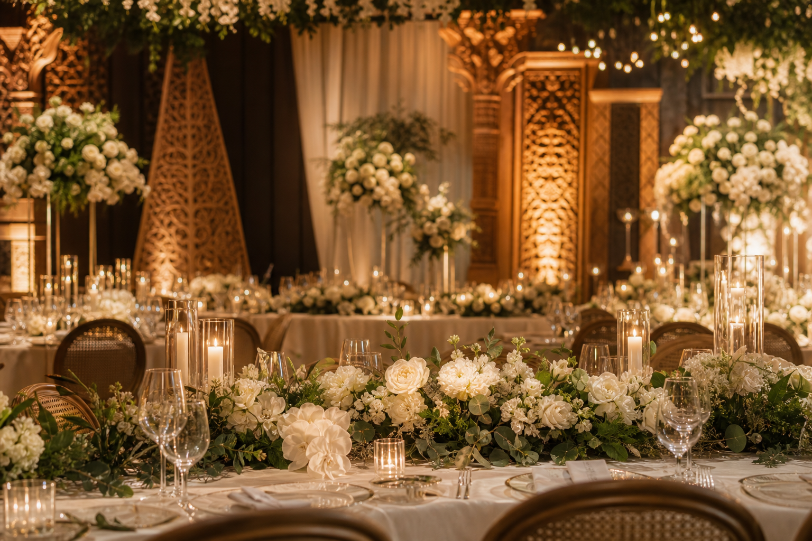
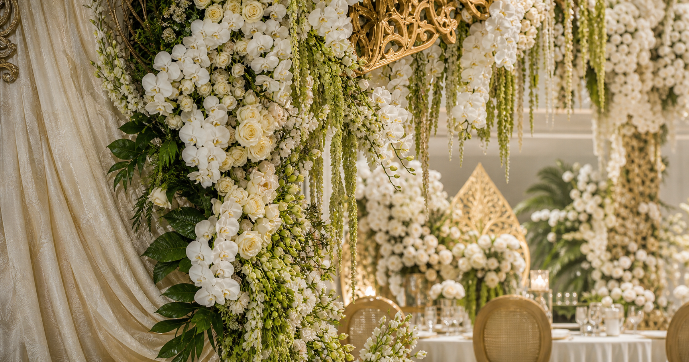

Wedding planning
Susun konsep, timeline, vendor, budget, dan rundown agar persiapan lebih tenang.
Wedding planner • decor • celebration
Sagita membantu pasangan mewujudkan pernikahan yang personal dan tertata—mulai dari konsep, dekorasi, catering, MUA, sampai koordinasi hari acara.

Layanan lengkap
Susun konsep, timeline, vendor, budget, dan rundown agar persiapan lebih tenang.
Terjemahkan moodboard menjadi venue yang hangat, personal, dan fotogenik.
Tim mendampingi koordinasi vendor dan keluarga supaya pasangan bisa menikmati acara.

Konsep yang personal
Paket awal
Day Coordination
Full Wedding Planning
Custom Celebration
Cara mulai
Tanggal, venue, jumlah tamu, adat, dan mood yang diinginkan.
Tim membuat arah visual, prioritas kebutuhan, dan estimasi budget.
Sesuaikan level pendampingan dengan energi dan waktu persiapan.
Detail acara berjalan dengan tim yang sudah memahami rencana.
“Kami jadi bisa menikmati acara sendiri karena vendor dan rundown sudah dipegang tim. Dekornya juga terasa kami banget.”
— Dita & Arga, intimate weddingArea demo: Surabaya dan Jawa Timur. Nama vendor, portfolio, harga, dan nomor WhatsApp masih dummy untuk contoh portfolio.
Punya tanggal incaran?
Ini demo website wedding planner buatan Infiraft. Cocok untuk menampilkan portfolio, paket, layanan, dan CTA konsultasi yang lebih meyakinkan.
Konsultasi via WhatsApp